Användarmanual Attentec Kommunikationsplattform
Attentecs Kommunikationsplattform syftar till att erbjuda en bekväm miljö att kommunicera i. Den lämpar sig ytterst väl för konsulter på ett företag som aspirerar att ständigt ha konsulter ute på fältet.
Plattformen har följande fokus:
- Utnyttja geografisk information för att ge en effektivare samverkan mellan anställda
- Synkronisera kontaktinformation som sedan lätt kan distribueras vidare till kunder med flera
Kommunikationsplattformen är uppdelad i två delar, en serversida där användare kan uppdatera sin information och en applikation för Android som synkroniserar mot nämnda server och presenterar informationen på ett bra sätt. Denna uppdelning följer nedan och funktionaliteten beskrivs där mer ingående.
Systemkrav
För att använda systemet krävs följande:
- Webbläsare
- Android-telefon med Android version 2.1 eller nyare
Snabbstart
Här ges en snabb introduktion med minimal information, för de som vill komma igång snabbt. Fastnar du på någon punkt finns mer information längre ned i dokumentet.
- Logga in på webbgränssnittet på denna länk.
- Tryck på visa vid ditt eget namn, och tryck "Generera telefonnyckel".
-
Ladda ner applikationen till telefonen från denna länk.
- Installera applikationen
- Starta applikationen, och logga in med din användare och telefonnyckel (skapad i punkt 2).
Server
Servern är central för lagring och tillhandahåller gränssnitt för att komma åt den lagrade informationen.
Skapa konto
Man kan logga in på sitt konto på denna länk. Man registrerar en ny användare på registreringssidan.
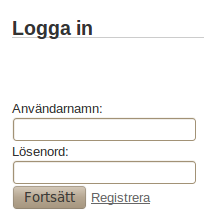
Figur 1. Fält för att logga in.
När en administratör skapar ett konto kommer man till sidan i figur 2.
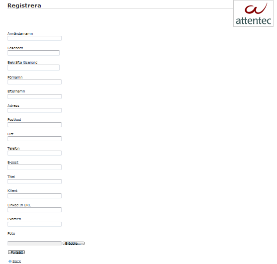
Figur 2. Fält för att skapa ny användare.
En del av den informationen som användaren väljer att ange kommer att användas vid generering av vCard (se längre ned) och visitkort för webben (se längre ned).
Logga in
Inloggning görs via fälten i figur 1. Notera att lösenordet här skiljer sig från det man använder för att sedan logga in via telefonen.
Visa kontakter
Nedan i figur 3 visas en lista på alla användare i kontaktdatabasen.
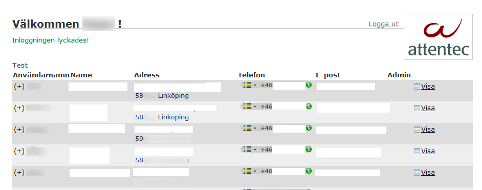
Figur 3. Kontakter registrerade i kontaktdatabasen.
Listan innehåller kortfattad information om alla användare och via plustecknet till vänster på varje rad kan man välja att expandera informationen för en användare för att få tillgång till mer utförlig information.
Om man väljer att klicka på länken visa på andra användare ser man information i stil med figur 4.
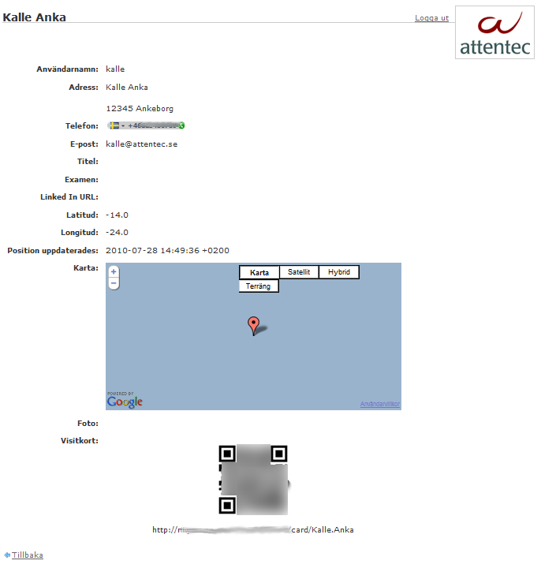
Figur 4. Information om vald användare.
Om man klickar på länken visa på sin egen rad i kontaktlistan får man än mer utförlig information. Den information som skiljer sig är telefonnyckeln. Hur denna används förklaras längre ned.
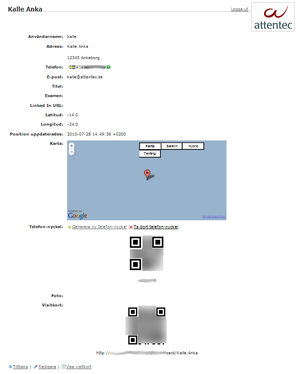
Figur 5. Information om dig själv.
Redigera information
Vid redigering av information går det att ändra på allt utom koordinater, som uppdateras av telefonen när den synkroniserar mot servern, och telefonnyckel som skapas enligt information nedan. Man kan även ställa in här om det ska vara möjligt att komma åt ett virtuellt visitkort med namn och telefonnummer. Visitkortet länkas från sidan i Figur 5 och är åtkomligt utan att vara inloggad.
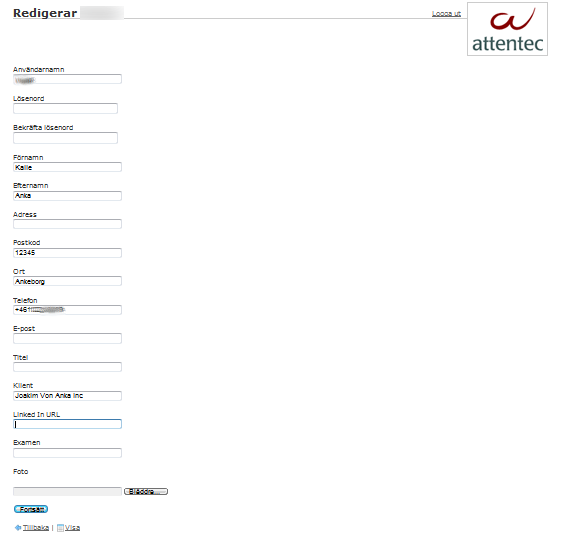
Figur 6. Fält för att redigera användarens information.
Telefonnyckel
Då säkerhet blir allt viktigare är det inget undantag här. För att logga in med applikationen behövs en telefonnyckel, som snabbt och enkelt kan skapas och avaktiveras med knappar på detaljsidan för en person, som syns i figur 7. Klickar man på "Generera ny telefonnyckel" så slumpas en ny nyckel för användaren. Det går även att ta bort inloggningsmöjlighet via applikation helt och hållet genom att klicka på "Ta bort telefonnyckel".
För att göra inmatning av telefonnyckel smidigare så finns det även en så kallad QR-kod som kan läsas av med telefonen om programmet "Barcode Scanner" är installerat. Barcode Scanner är gratis och går att ladda ned från Android Market (följ denna länk från telefonen: market://details?id=com.google.zxing.client.android eller sök på android market efter barcode scanner).
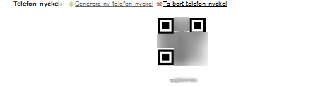
Figur 7. Gränssnitt för generering och avläsning av telefonnyckel.
Visitkort
Det finns en möjlighet att hänvisa till länkar för visitkort i form av vCard och i form av en mobilanpassade hemsida som har mer utförlig information. QR-koden som kan ses i figur 8 kan läsas av med programmet Barcode Scanner. Tanken är att den både kan läsas av från hemsidan och från ett tryckt visitkort.
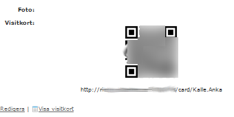
Figur 8. Nyckel för avläsning av visitkort samt länk till visitkort både för webb och nedladdning.
Klient
Applikationen för plattformen Android är avsedd att utnyttja den kontaktdatabas som finns på servern för att tillhandahåll en kommunikationsplattform. I grova drag är den uppdelad i två delar, en kontaktlista och en kartfunktion där man kan se var användarna befinner sig.
Installation
Installation av applikationen sker i fem steg:
- Ställ in telefonen att tillåta applikationer som inte är från market enligt följande:
- Gå in på "Inställningar"
- Gå in på "Program"
- Kryssa i "Okända källor"
- Om du vill rapportera din position (rekommenderas) måste GPS-sensorn aktiveras:
- Gå in på "Inställningar"
- Gå in på "Plats"
- Kryssa i "Använd GPS-satelliter"
- Ladda ned applikationen med telefonen från denna länk. Om du installerat applikationen "Barcode Scanner" kan du läsa in denna QR-kod:
- När den laddats ned, klicka på den i listan.
- Tryck installera, och sedan öppna.
Logga in
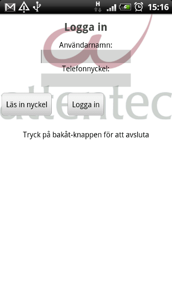
Figur 9. Login-ruta för Android-applikationen.
I figur 9 kan man se hur inloggningsrutan för Android-applikationen ser ut. Här behöver man en telefonnyckel för att logga in. Denna kan genereras via webgränssnittet, se ovan. Det som kan verka nytt är knappen som lyder "Läs in nyckel". För att använda denna behöver man installera applikationen Barcode Scanner för Android. Med hjälp av denna funktion kan man läsa av den så kallade QR-kod som syns i webbgränssnittet när man visar information för sin egen användare.
Kontaktlista
I figur 10 kan man se hur kontaktlistan i Android-applikationen ser ut. Den uppdateras enligt det intervall man angivit i inställningar (se längre ned). Utöver namn och telefonnummer visar den även vad man gör för stunden, om kontakten angett det, kontakters tillgänglighet. Tillgängligheten visas även med en färgad cirkel. Om en kontakt loggat ut eller inte kontaktat servern på 3 timmar så visas denna som offline.
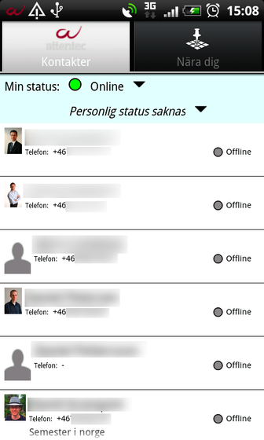
Figur 10. Synkroniserbar kontaktlista i Android-appen.
Uppdatera status
För att hålla övriga användare uppdaterade kan man välja att ange en specifik status för vad man gör för stunden. Uppdateringen görs genom att klicka på textfältet under "Min status". Denna status-uppdatering når användarna när deras applikation uppdaterar kontaktlistan. Hur ofta den gör detta beror på vilka inställningar de har. För att statusen ska fortsätta vara satt, måste programmets bakgrundsservice vara igång, se nedan för information om hur man kan ha igång den men stänga ner applikationen.
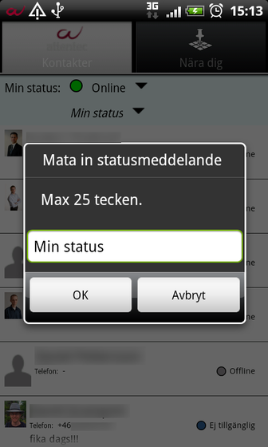
Figur 11. Fält för att uppdatera status. Syns i kontaktlistan för de andra användarna av applikationen.
Uppdatera tillgänglighet
Med hjälp av menyn i figur 12 kan man ange vilken tillgänglighet man har för stunden. Menyn visas när man trycker på cirkeln till höger om "Min status". Denna tillgänglighet markeras både genom en cirkel och en text. Båda dessa visas i kontaktlistan för de andra användarna. Den färgade cirkeln visas även på kartan. För att statusen ska fortsätta vara satt, måste programmets bakgrundsservice vara igång, se nedan för information om hur man kan ha igång den men stänga ner applikationen.
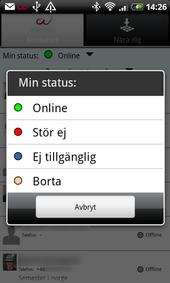
Figur 12. Fält för att uppdatera tillgänglighet. Syns i kontaktlistan för de andra användarna av applikationen.
Snabbkontakt
Ett fönster för att smidigt kunna ta kontakt med användarna. Kontaktsätten som visas beror på hur mycket information kontakten har valt att ange.
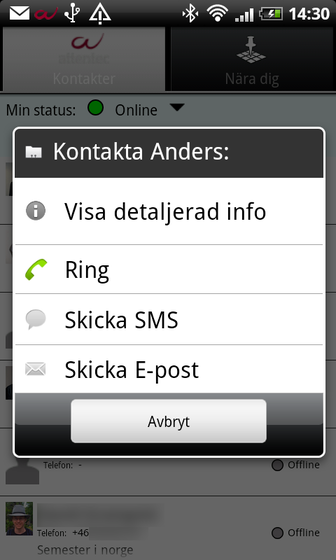
Figur 13. Olika sätt att kontakta den berörda kontakten på.
Visa Detaljerad Info
Ett fönster för att visa detaljerad info. Man kommer åt detta fönster via fönstret för snabbkontakt som illustreras i Figur 13. Om telefonnummer, e-mail respektive linkedin är ifyllt kommer de att anges som länkar som man kan klicka på för att ringa, skicka E-post eller gå in på linkedin.
Sortera kontakter
Då det ibland är av intresse att sortera kontakterna på olika sätt beroende på situation finns det en meny för kontaktlistan som erbjuder fyra sorteringsmöjligheter (se figur 14):
- Förnamn
- Efternamn
- Avstånd
- Senast kontaktad
Om man är intresserad av fysisk interaktion med andra användare kan sortering efter avstånd vara fördelaktigt.
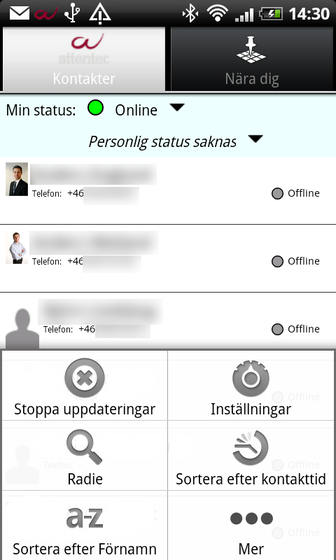
Figur 14. Olika sätt att sortera kontakterna på.
Kontakter inom viss radie
För att få tillgång till de som bara befinner sig inom en viss radie kan man välja Radie i menyn. Detta startar en aktivitet som har en slider som används för ställa in önskad radie. Kontaktlistan nedanför kommer då bara att visa de som befinner sig inom denna radie. Varje kontakt kan avmarkeras och markeras för att sedan kontaktas med sms eller e-mail. På det här sättet kan man enkelt nå ut med information till alla som befinner sig i närheten.
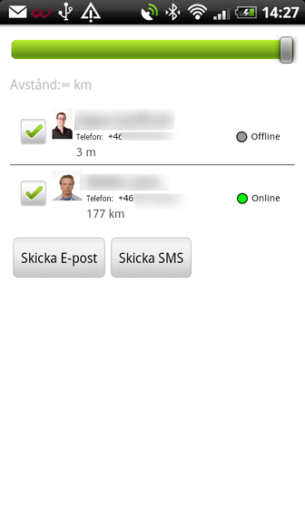
Figur 15. Alla kontakter inom vald radie
Nära dig
Detta är den andra stora funktionen i Android-applikationen. Den använder sig av googles API för google maps och visar bubblor för vart de andra användarna befinner sig. Om en användare inte har varit inloggad på länge så blir koordinaten inaktuell och visas inte längre på kartan. På så vis har man alltid en uppdaterad vy över vart användarna befinner sig. I varje bubbla visas en bild, namn samt en cirkel som indikerar tillgänglighet. För information om vad varje färg innebär hänvisas läsaren till figur 12.
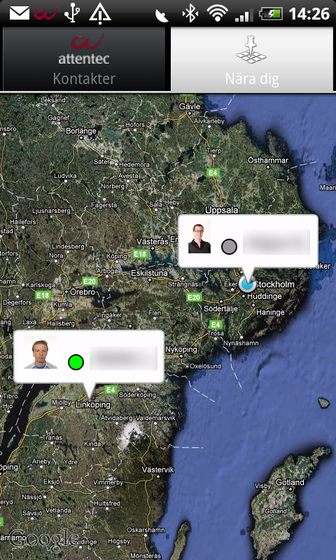
Figur 16. Karta med användares position
Snabbkontakt
På samma sätt som i kontaktlistan kan man enkelt kontakta en användare på kartan genom att klicka på dennes bubbla. Denna vy visas i figur 16.
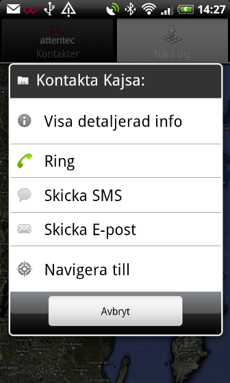
Figur 17. Olika sätt att kontakta användare på.
Avstängning och bakgrundsservice
För att andra ska se dig som online, eller vilken status du satt, så måste applikationens bakgrundstjänst vara igång i bakgrunden. Man åstadkommer detta genom att "stänga" programmet med "Hem"-knappen, som har ett litet hus på sig. Om man helt vill stänga ner programmet (och visas som offline för andra), stänger man av programmet med "Bakåt"-knappen, med en liten pil på sig.
Inställningar
Android-applikationen kan ställas in av varje användre. Det som kan varieras är hur ofta och om vissa saker ska uppdateras. Detta är främst lämpligt för att spara batteri och kostnader då det kan vara dyrare att uppdatera då man är utomlands. Att stänga av skickning av position kan vara önskvärt när man inte vill visa vart man är. Som grundinställning skickas den egna positionen till servern endast på arbetstid mellan 8 och 17. Även dessa tider kan ställas in.
Uppdateringar
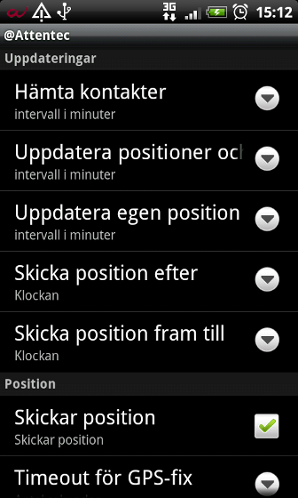
Figur 18. Konfigurering av hur ofta olika uppdateringar ska ske och huruvida GPS-koordinater ska skickas in eller ej.
För att applikationen ska ha tillgång till ny information så uppdaterar den med jämna intervall. Dessa intervall kan varieras genom att gå in på inställningar via menyn. Menyn får man fram genom att klicka på knappen Menu på telefonen. I figur 17 ovan kan man se vilka intervall som går att variera. Det går även att välja om GPS ska uppdateras eller ej. Inställningsmöjligheterna listas även här:
- Hämta kontakter intervall: Hur ofta hela listan med kontakter ska hämtas från servern.
- Uppdatera positioner och status intervall: Hur ofta andras positioner och status hämtas från server.
- Uppdatera egen position intervall: Hur ofta egen status hämtas från GPS och skickas till server.
- Skicka position efter: Efter vilket klockslag egen position skickas till server.
- Skicka position fram till: Fram till vilket klockslag egen position skickas till server.
- Skickar position: Om egen position skickas till servern och andra användare. Om denna inte är ikryssad kommer ingen GPS att användas.
- Timeout för GPS-fix: Hur länge telefonen ska aktivera GPS-sensorn vid varje hämtning av egen position. Denna inställning har prioritet före noggrannhetskravet nedan.
- Noggrannhetskrav på GPS: Hur många meter telefonen ska ha som krav för att stänga av GPSen och skicka position.
Bakgrundstjänster
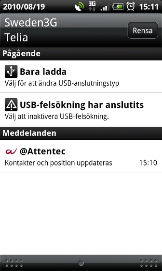
Figur 19. Lista över bakgrundstjänster som är igång i telefonen.
För att hantera synkronisering och uppdateringar för applikationen körs en brakgrundstjänst. Denna kan stängas av separat från applikationen via meny-knappen för att helt stänga av all kontakt med servern.
Detta kan vara önskvärt när man är på resande fot utomlands och kan ha höga roamingavgifter. Ur batterisynpunkt är det också önskvärt att ha så lite igång som möjligt. En första batterisparande åtgärd kan göras genom att ändra applikationens inställningar enligt stycket ovan. Förhoppningen är att denna service alltid ska vara igång under arbetstid, så det är rekommenderat att inte stänga av den om det inte föreligger bra skäl till det.
Om man tvärtom vill ha igång bakgrundstjänsten men inte applikationen (för att till exempel synas som online och skicka position till andra), gömmer man applikationen genom att trycka på "Hem"-knappen.
Synkronisering med telefonens kontaktlista
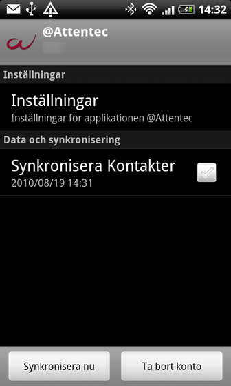
Figur 20. Synkronisering med telefonens kontaktlista.
Det finns funktionalitet för att lägga in och uppdatera kontakterna från applikationen i telefonens kontaktlista, för enkel åtkomst även från den vanliga telefon-menyn. Denna kontaktsynkronisering fungerar så att man lägger till applikationen som ett synkroniserings-konto i Androids lista på källor, ungefär som Gmail och eventuella andra konton.
För att aktivera denna synkronisering följer man dessa steg:
- Gå in i Inställningar -> Konton och synkronisering.
- Välj Lägg till konto, och sedan Attentec
- När du lagt till kontot kan du trycka på det för att aktivera eller inaktivera synkronisering av kontakter, och även tvinga fram en synkronisering.
- För att visa eller gömma de synkroniserade kontakterna från telefonens kontaktlista, kan man kryssa ur Attentec i applikationen Kontakter -> Meny -> Visa.
Rättigheter och vad applikationen använder dem till
För att göra vissa saker behöver applikationen rättigheter som användaren måste godkänna vid installation. Detta är en lista på alla rättigheter som applikationen kräver, och varför de krävs och till vad:
Din Plats
Position som skickas till servern och ut till andra användare av applikationen. Om och när detta görs kan ställas in i inställningarna enligt ovan.
Dina personliga uppgifter, dina konton, systemverktyg
Dessa behövs om man vill synkronisera kontaktlistan i applikationen med telefonens kontaktlista enligt ovan. Om man inte ställer in detta används inte dessa rättigheter alls.
Nätverkskommunikation
Används för att synkronisera position och kontaktdata med servern. Hur ofta den synkroniserar olika saker kan ställas in i inställningar.
Ringa telefonnummer direkt
Detta görs när man väljer "Ring" i applikationen.